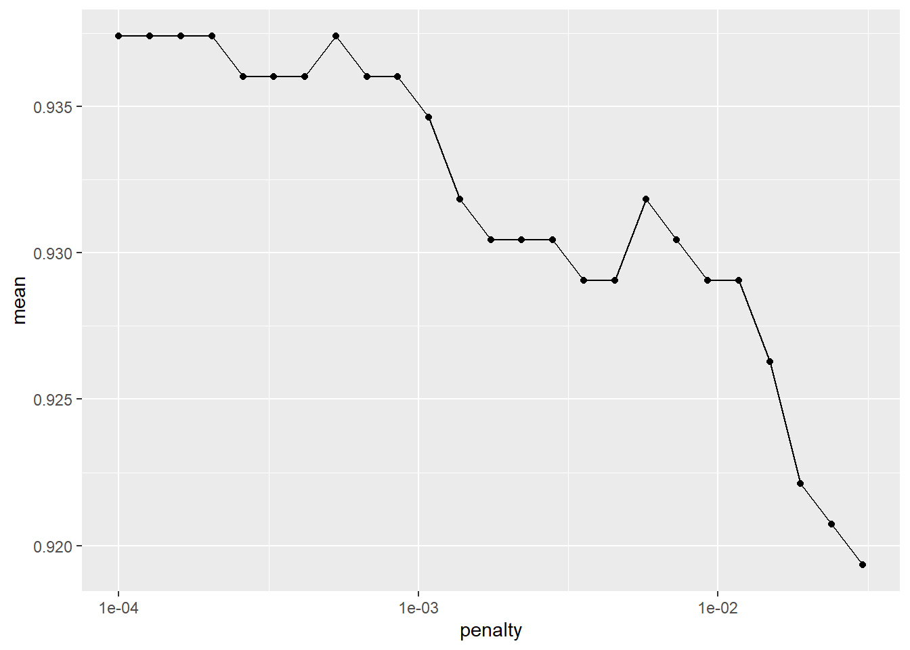
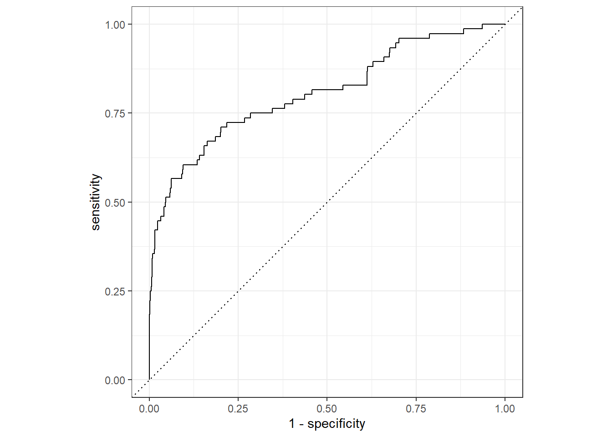

2 Modeling in R With Tidymodels
“The tidymodels framework is a collection of packages for modeling and machine learning using tidyverse principles.”
Many modeling techniques in R require different syntax and different data structures. Tidymodels provides modeling workflow that standardizes syntax and data structures regardless of the model type.
2.1 Tidymodels Packages
Like the tidyverse, tidymodels is a ‘meta package’ consisting of the following packages:
- {rsample}: Creates different types of resamples and corresponding classes for analysis
- {recipes}: Uses dplyr-like pipeable sequences of feature engineering steps to get data ready for modeling
- {workflows}: Creates an object that can bundle together your pre-processing, modeling, and post-processing steps
- {parsnip}: Provides a tidy, unified interface to models than can by used to try a range of models without getting bogged down in the syntactical ninutae of the underslying packages.
- {tune}: Facilitates hyperparameter tuning for the tidymodels packages.
- {yardstick}: Estimates how well models are working using tidy data principles.
- {infer}: Performs statistical inference using an expressive statistical grammar that coheres with the tidyverse design framework.
2.1.1 Tidymodels Road Map
What we plan to do:
- Explore data
- Create model
- {rsample} Split data into test/train
- {recipies} Preprocess data
- {parsnip} Specify model
- {workflows} Create workflow
- {tune} / {dials} Train and tune parameters
- {parsnip} Finalize model
- {yardstick} Validate model
- Predict on new data
2.1.2 Modeling Goal
We desire to create a model using the historical data and use that model to predict who may make the Hall-of-Fame in the eligible data.
2.2 Explore Data
## Warning: package 'tidyverse' was built under R version 3.6.3## -- Attaching packages --------------------------------------- tidyverse 1.3.1 --## v ggplot2 3.3.3 v purrr 0.3.4
## v tibble 3.1.0 v dplyr 1.0.6
## v tidyr 1.1.3 v stringr 1.4.0
## v readr 1.4.0 v forcats 0.5.1## Warning: package 'ggplot2' was built under R version 3.6.3## Warning: package 'tibble' was built under R version 3.6.3## Warning: package 'tidyr' was built under R version 3.6.3## Warning: package 'readr' was built under R version 3.6.3## Warning: package 'purrr' was built under R version 3.6.3## Warning: package 'dplyr' was built under R version 3.6.3## Warning: package 'forcats' was built under R version 3.6.3## -- Conflicts ------------------------------------------ tidyverse_conflicts() --
## x dplyr::filter() masks stats::filter()
## x dplyr::lag() masks stats::lag()historical <- read_csv("01_data/historical_baseball.csv", col_types = cols(inducted = col_factor()))
eligible <- read_csv("01_data/eligible_baseball.csv") ##
## -- Column specification --------------------------------------------------------
## cols(
## player_id = col_character(),
## g = col_double(),
## ab = col_double(),
## r = col_double(),
## h = col_double(),
## x2b = col_double(),
## x3b = col_double(),
## hr = col_double(),
## rbi = col_double(),
## sb = col_double(),
## cs = col_double(),
## bb = col_double(),
## so = col_double(),
## last_year = col_double()
## )## # A tibble: 3,235 x 15
## player_id inducted g ab r h x2b x3b hr rbi sb
## <chr> <fct> <dbl> <dbl> <dbl> <dbl> <dbl> <dbl> <dbl> <dbl> <dbl>
## 1 aaronha01 1 3298 12364 2174 3771 624 98 755 2297 240
## 2 aaronto01 0 437 944 102 216 42 6 13 94 9
## 3 aasedo01 0 448 5 0 0 0 0 0 0 0
## 4 abbated01 0 855 3044 355 772 99 43 11 324 142
## 5 abbotgl01 0 248 0 0 0 0 0 0 0 0
## 6 abbotji01 0 263 21 0 2 0 0 0 3 0
## 7 abernte02 0 681 181 12 25 3 0 0 9 0
## 8 ackerji01 0 467 54 2 9 1 0 0 1 0
## 9 adairje01 0 1165 4019 378 1022 163 19 57 366 29
## 10 adamsba01 0 482 1019 79 216 31 15 3 75 1
## # ... with 3,225 more rows, and 4 more variables: cs <dbl>, bb <dbl>, so <dbl>,
## # last_year <dbl>The historical data contains career statistics of every baseball batter from 1880-2011 who no longer meet Hall-of-Fame eligability requirements or who have already made the hall-of-fame.
Hall of Fame Qualifications
- Play at least 10 years
- Retired for at least 5 years
- Players have only 10 years of eligability
The eligible data contains everyone who is still eligible for the Hall-of-Fame
You can see from the data below, the players who make the Hall-of-Fame tend to perform better in a few standard baseball statistics.
historical %>%
select(-last_year) %>%
group_by(inducted) %>%
summarise(across(.cols = where(is.numeric), .fns = ~round(mean(.),0))) %>%
gt::gt()| inducted | g | ab | r | h | x2b | x3b | hr | rbi | sb | cs | bb | so |
|---|---|---|---|---|---|---|---|---|---|---|---|---|
| 1 | 1649 | 5794 | 934 | 1704 | 288 | 75 | 146 | 852 | 161 | 36 | 627 | 551 |
| 0 | 792 | 2330 | 305 | 612 | 99 | 23 | 40 | 273 | 48 | 16 | 215 | 269 |
The plot of the data supports this as well.
historical %>%
pivot_longer(g:so) %>%
ggplot(aes(x = inducted, y = value)) +
geom_boxplot() +
facet_wrap(~name, scales = "free") +
labs(y = "",x = "Hall-of-Fame Indicator")
2.3 Split Data
To begin the analysis, we will load the {tidymodels} library.
## Warning: package 'tidymodels' was built under R version 3.6.3## Registered S3 method overwritten by 'tune':
## method from
## required_pkgs.model_spec parsnip## -- Attaching packages -------------------------------------- tidymodels 0.1.2 --## v broom 0.7.6 v recipes 0.1.15
## v dials 0.0.9 v rsample 0.0.9
## v infer 0.5.4 v tune 0.1.3
## v modeldata 0.1.0 v workflows 0.2.1
## v parsnip 0.1.7 v yardstick 0.0.8## Warning: package 'broom' was built under R version 3.6.3## Warning: package 'dials' was built under R version 3.6.3## Warning: package 'scales' was built under R version 3.6.3## Warning: package 'infer' was built under R version 3.6.3## Warning: package 'modeldata' was built under R version 3.6.3## Warning: package 'recipes' was built under R version 3.6.3## Warning: package 'rsample' was built under R version 3.6.3## Warning: package 'yardstick' was built under R version 3.6.3## -- Conflicts ----------------------------------------- tidymodels_conflicts() --
## x scales::discard() masks purrr::discard()
## x dplyr::filter() masks stats::filter()
## x recipes::fixed() masks stringr::fixed()
## x dplyr::lag() masks stats::lag()
## x yardstick::spec() masks readr::spec()
## x recipes::step() masks stats::step()We will split the data into a training (2/3s of the data) and testing set (1/3) of the data.
We set the seed so the analysis is reproducible.
The output of this function is an rsplit object. An rsplit object that can be used with the training and testing functions to extract the data in each split.
## <Analysis/Assess/Total>
## <2157/1078/3235>We can extract the data from the rsplit object.
## # A tibble: 2,157 x 15
## player_id inducted g ab r h x2b x3b hr rbi sb
## <chr> <fct> <dbl> <dbl> <dbl> <dbl> <dbl> <dbl> <dbl> <dbl> <dbl>
## 1 aaronha01 1 3298 12364 2174 3771 624 98 755 2297 240
## 2 abbotgl01 0 248 0 0 0 0 0 0 0 0
## 3 abbotji01 0 263 21 0 2 0 0 0 3 0
## 4 abernte02 0 681 181 12 25 3 0 0 9 0
## 5 adairje01 0 1165 4019 378 1022 163 19 57 366 29
## 6 adamsbe01 0 267 678 37 137 17 4 2 45 9
## 7 ageeto01 0 1129 3912 558 999 170 27 130 433 167
## 8 aguilri01 0 737 139 12 28 3 0 3 11 0
## 9 ainsmed01 0 1078 3048 299 707 108 54 22 317 86
## 10 aldremi01 0 930 2147 277 565 104 9 41 271 19
## # ... with 2,147 more rows, and 4 more variables: cs <dbl>, bb <dbl>, so <dbl>,
## # last_year <dbl>From the training data, we further split the data into a training (2/3 of the training data) and a validation set (1/3 of the training data) for parameter tuning and model assessment.
set.seed(42)
validation_set <- validation_split(data = train_data, prop = 2/3, strata = inducted)
validation_set## # Validation Set Split (0.67/0.33) using stratification
## # A tibble: 1 x 2
## splits id
## <list> <chr>
## 1 <split [1438/719]> validation2.4 Prepare Data
What preprocessing steps do you want to do to your date every time you model?
We need to specify the following things:
- Specify the modeling formula
- Specify the ‘roles’ of each of the factors
- Do all preprocessing steps
In the {tidymodels} construct, we do this by creating a recipe.
baseball_recipie <-
recipe(inducted ~ ., data = train_data) %>%
update_role(player_id, new_role = "ID") %>%
step_center(all_numeric()) %>%
step_scale(all_numeric()) %>%
step_nzv(all_numeric()) %>%
step_rm("last_year")
baseball_recipie## Data Recipe
##
## Inputs:
##
## role #variables
## ID 1
## outcome 1
## predictor 13
##
## Operations:
##
## Centering for all_numeric()
## Scaling for all_numeric()
## Sparse, unbalanced variable filter on all_numeric()
## Delete terms "last_year"2.5 Specify Model
Now that we’ve prepared our data, we need to specify the model we wish to execute.
Here we identify the model type, specify parameters which need tuning, and then set the ‘engine’ (package) we wish to do the work.
lr_mod <-
logistic_reg(mode = "classification", penalty = tune(), mixture = 1) %>%
set_engine(engine = "glmnet")
lr_mod## Logistic Regression Model Specification (classification)
##
## Main Arguments:
## penalty = tune()
## mixture = 1
##
## Computational engine: glmnet2.6 Create Workflow
Now that we’ve prepared the data and specified the model, we put it all together in a workflow.
In a workflow, we add the specified model and the preprocessing recipe.
baseball_workflow <-
workflow() %>%
add_model(lr_mod) %>%
add_recipe(baseball_recipie)
baseball_workflow## == Workflow ====================================================================
## Preprocessor: Recipe
## Model: logistic_reg()
##
## -- Preprocessor ----------------------------------------------------------------
## 4 Recipe Steps
##
## * step_center()
## * step_scale()
## * step_nzv()
## * step_rm()
##
## -- Model -----------------------------------------------------------------------
## Logistic Regression Model Specification (classification)
##
## Main Arguments:
## penalty = tune()
## mixture = 1
##
## Computational engine: glmnet2.7 Train Model and Tune Parameters
This step not only executes the model building proceedure, but it contains the structure to execute the model over a grid of parameters to tune the model and find the best parameter set.
First we specify the parameters over which we desire to tune.
Next, we use tune_grid() to execute the model one time for each parameter set. In this instance, this is 30 times.
This function has several arguments
grid: The tibble we created that contains the parameters we have specified.
control: Controls the apects of the grid search process.
metrics: Specifies the model quality metrics we wish to save for each model in cross validation.
We also specify that we wish to save the performance metrics for each of the 30 iterations.
set.seed(42)
lr_validation <-
baseball_workflow %>%
tune_grid(validation_set,
grid = lr_reg_grid,
control = control_grid(save_pred = TRUE,
verbose = TRUE,
allow_par = FALSE),
metrics = metric_set(roc_auc, accuracy))## Warning: package 'rlang' was built under R version 3.6.3## Warning: package 'vctrs' was built under R version 3.6.3## Warning: package 'glmnet' was built under R version 3.6.3## i validation: preprocessor 1/1## v validation: preprocessor 1/1## i validation: preprocessor 1/1, model 1/1## v validation: preprocessor 1/1, model 1/1## i validation: preprocessor 1/1, model 1/1 (predictions)## # Tuning results
## # Validation Set Split (0.67/0.33) using stratification
## # A tibble: 1 x 5
## splits id .metrics .notes .predictions
## <list> <chr> <list> <list> <list>
## 1 <split [1438/71~ validation <tibble [60 x ~ <tibble [0 x ~ <tibble [21,570 x ~Here, we extract out the best 25 models based on accuracy and plot them vs the pentalty from the tuning parameter grid.
lr_validation %>%
show_best("accuracy", n = 25) %>%
arrange(penalty) %>% as.data.frame() %>%
ggplot(aes(x = penalty, y = mean)) +
geom_point() +
geom_line() +
scale_x_log10()
We desire the pentalty that gives us the simplest model, with the best accuracy. Because of that, we select the 7th smallest penalty.
We show the ROC curve for the selected model.
lr_validation %>%
collect_predictions(parameters = lr_best) %>%
roc_curve(inducted, .pred_1) %>%
autoplot()
2.8 Build model on all training data, test on validation set.
Now that we’ve found the best parameter set, we need to apply this model to the entire training dataset.
We made one tweek to our model specification. We specify the specific penalry from our best model from cross validation.
last_lr_mod <-
logistic_reg(mode = "classification", penalty = lr_best$penalty, mixture = 1) %>%
set_engine(engine = "glmnet")
last_lr_mod## Logistic Regression Model Specification (classification)
##
## Main Arguments:
## penalty = lr_best$penalty
## mixture = 1
##
## Computational engine: glmnetWe update our workflow to have the best parameter set with the function finalize_workflow().
## == Workflow ====================================================================
## Preprocessor: Recipe
## Model: logistic_reg()
##
## -- Preprocessor ----------------------------------------------------------------
## 4 Recipe Steps
##
## * step_center()
## * step_scale()
## * step_nzv()
## * step_rm()
##
## -- Model -----------------------------------------------------------------------
## Logistic Regression Model Specification (classification)
##
## Main Arguments:
## penalty = 0.00041753189365604
## mixture = 1
##
## Computational engine: glmnetWe fit the model on the entire training set.
We can see the performance of the model below.
## # A tibble: 2 x 4
## .metric .estimator .estimate .config
## <chr> <chr> <dbl> <fct>
## 1 accuracy binary 0.943 Preprocessor1_Model1
## 2 roc_auc binary 0.807 Preprocessor1_Model1And we can take a view look at the ROC of our final model.

2.9 Build model on all training and validation data
Now, we can use the fit() function to build the model on the enitre historical data.
## # A tibble: 13 x 3
## term estimate penalty
## <chr> <dbl> <dbl>
## 1 (Intercept) 3.21 0.000418
## 2 g -1.68 0.000418
## 3 ab 3.11 0.000418
## 4 r -1.43 0.000418
## 5 h -0.988 0.000418
## 6 x2b 0 0.000418
## 7 x3b -0.118 0.000418
## 8 hr 0 0.000418
## 9 rbi -0.477 0.000418
## 10 sb 0 0.000418
## 11 cs 0.190 0.000418
## 12 bb 0.250 0.000418
## 13 so 0.0290 0.000418Now that we have the model, we can make predictions on the eligible data.
How did we do?
last_lr_workflow %>%
fit(data = historical) %>%
predict(eligible, type = "prob") %>%
bind_cols(eligible) %>%
arrange(-.pred_1) %>%
filter(.pred_1 >.4) %>%
print(n = Inf)## # A tibble: 31 x 16
## .pred_1 .pred_0 player_id g ab r h x2b x3b hr rbi
## <dbl> <dbl> <chr> <dbl> <dbl> <dbl> <dbl> <dbl> <dbl> <dbl> <dbl>
## 1 0.946 0.0535 bondsba01 2986 9847 2227 2935 601 77 762 1996
## 2 0.906 0.0941 rodrial01 2784 10566 2021 3115 548 31 696 2086
## 3 0.809 0.191 pujolal01 2426 9138 1670 2825 602 16 591 1817
## 4 0.792 0.208 ramirma02 2302 8244 1544 2574 547 20 555 1831
## 5 0.747 0.253 thomeji01 2543 8422 1583 2328 451 26 612 1699
## 6 0.745 0.255 palmera01 2831 10472 1663 3020 585 38 569 1835
## 7 0.734 0.266 jonesch06 2499 8984 1619 2726 549 38 468 1623
## 8 0.675 0.325 jeterde01 2747 11195 1923 3465 544 66 260 1311
## 9 0.661 0.339 sheffga01 2576 9217 1636 2689 467 27 509 1676
## 10 0.649 0.351 ortizda01 2408 8640 1419 2472 632 19 541 1768
## 11 0.628 0.372 heltoto01 2247 7962 1401 2519 592 37 369 1406
## 12 0.623 0.377 walkela01 1988 6907 1355 2160 471 62 383 1311
## 13 0.596 0.404 cabremi01 2096 7853 1321 2519 523 17 446 1553
## 14 0.592 0.408 beltrca01 2457 9301 1522 2617 536 78 421 1536
## 15 0.535 0.465 beltrad01 2720 10295 1428 2942 591 36 445 1571
## 16 0.528 0.472 guerrvl01 2147 8155 1328 2590 477 46 449 1496
## 17 0.525 0.475 giambja01 2260 7267 1227 2010 405 9 440 1441
## 18 0.509 0.491 gonzalu01 2591 9157 1412 2591 596 68 354 1439
## 19 0.508 0.492 kentje01 2298 8498 1320 2461 560 47 377 1518
## 20 0.499 0.501 sosasa01 2354 8813 1475 2408 379 45 609 1667
## 21 0.496 0.504 damonjo01 2490 9736 1668 2769 522 109 235 1139
## 22 0.483 0.517 mcgrifr01 2460 8757 1349 2490 441 24 493 1550
## 23 0.478 0.522 delgaca01 2035 7283 1241 2038 483 18 473 1512
## 24 0.435 0.565 edmonji01 2011 6858 1251 1949 437 25 393 1199
## 25 0.427 0.573 abreubo01 2425 8480 1453 2470 574 59 288 1363
## 26 0.424 0.576 francju01 2527 8677 1285 2586 407 54 173 1194
## 27 0.421 0.579 martied01 2055 7213 1219 2247 514 15 309 1261
## 28 0.417 0.583 finlest01 2583 9397 1443 2548 449 124 304 1167
## 29 0.409 0.591 galaran01 2257 8096 1195 2333 444 32 399 1425
## 30 0.402 0.598 aloumo01 1942 7037 1109 2134 421 39 332 1287
## 31 0.401 0.599 burksel01 2000 7232 1253 2107 402 63 352 1206
## # ... with 5 more variables: sb <dbl>, cs <dbl>, bb <dbl>, so <dbl>,
## # last_year <dbl>